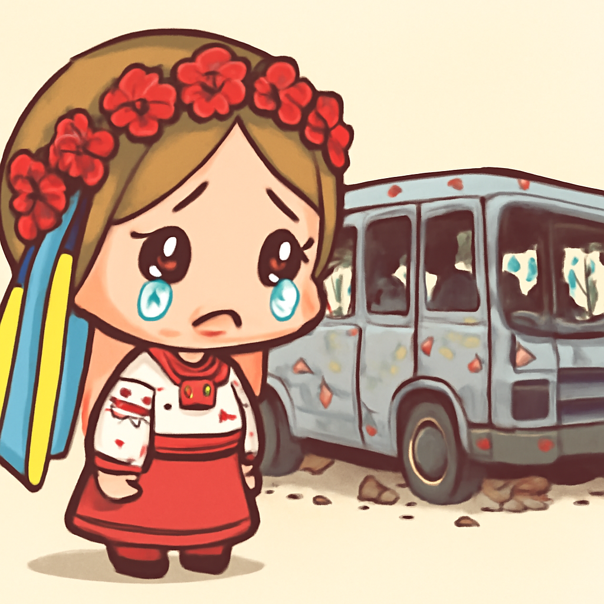
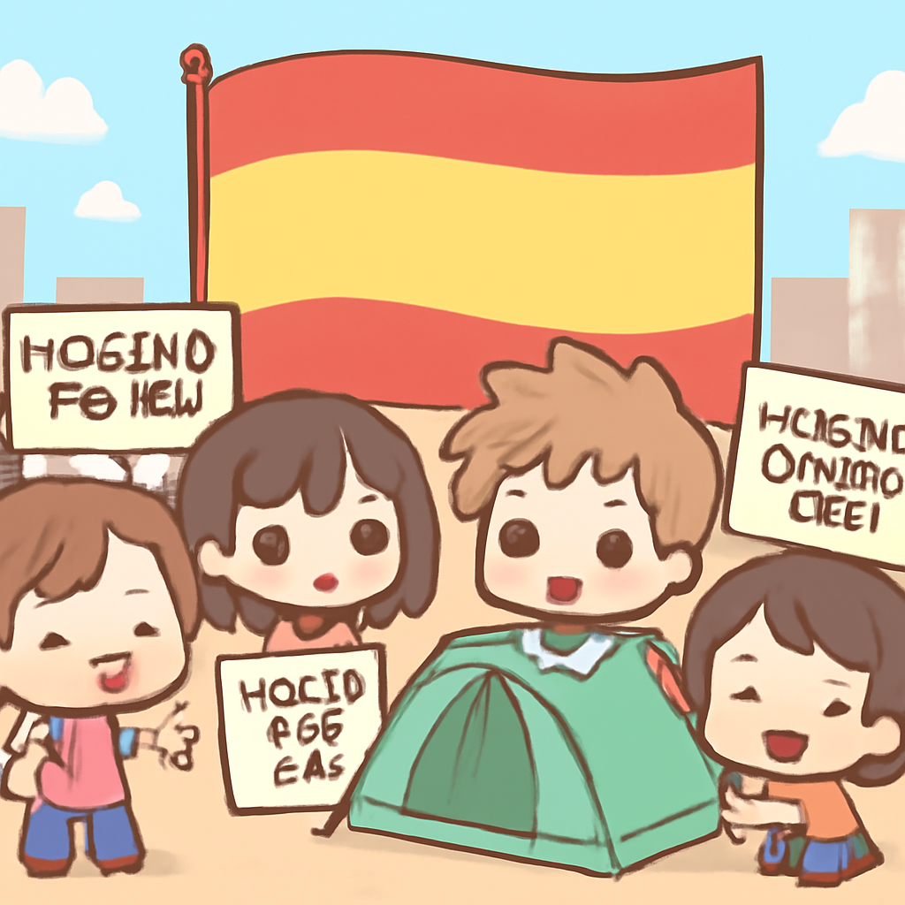

其一 · 烏克蘭克拉馬托爾斯克 · 俄羅斯空襲造成30人死亡
俄軍在克拉馬托爾斯克空襲，造成重大傷亡。

在烏克蘭克拉馬托爾斯克，俄羅斯的空襲擊中至少30人喪生，目標是兩輛擠滿民眾的公交車。這一事件突顯了當前衝突的激烈程度，國際社會對此表示譴責，並呼籲立即停止攻擊民用設施。面對如此嚴重的情況，大家不禁想，戰爭真的是最糟糕的選擇。
🔗 原始新聞 ↗
2026-10-09 · 以古觀今，以笑抗愁
俄軍在克拉馬托爾斯克空襲，造成重大傷亡。

在烏克蘭克拉馬托爾斯克，俄羅斯的空襲擊中至少30人喪生，目標是兩輛擠滿民眾的公交車。這一事件突顯了當前衝突的激烈程度，國際社會對此表示譴責，並呼籲立即停止攻擊民用設施。面對如此嚴重的情況，大家不禁想，戰爭真的是最糟糕的選擇。
🔗 原始新聞 ↗
西班牙首都抗議者要求解決住房問題。

在西班牙馬德里，數百名抗議者搭起帳篷，表達對住房危機的不滿，指責‘秃鷹基金’推高租金，讓人住不起。首相宣佈提前選舉，這場抗議運動可能成為政治變革的催化劑。看來，選票可能比租金更能引起注意！
🔗 原始新聞 ↗
法國學生抗議超過三週，要求改善教育環境。
在法國巴黎，學生們的抗議活動已持續三週，因為學校環境惡劣，教學資源不足。儘管政府努力尋找解決方案，抗議活動仍未見平息，還吸引了許多成年人的支持。這真是一場‘學校的革命’，大家都關心教育問題！
🔗 原始新聞 ↗
加拿大詩人安妮·卡森因創新作品獲獎。
加拿大詩人安妮·卡森因其跨越詩歌、小說與學術界限的作品，榮獲諾貝爾文學獎。這位76歲的詩人以大膽和創新的風格備受推崇，她的成就再次證明了文學的力量。看來，文學界又多了一位‘超級英雄’！
🔗 原始新聞 ↗
俄羅斯傳出可能的疫情消息，外界憂心。
近日，俄羅斯的西伯利亞地區傳出可能爆發瘟疫的消息，但克里姆林宮卻保持沉默，引發了外界的擔憂。許多人對此表示懷疑，認為政府可能在隱瞞不利消息。看來，有些消息真的是‘說了也沒用’！
🔗 原始新聞 ↗